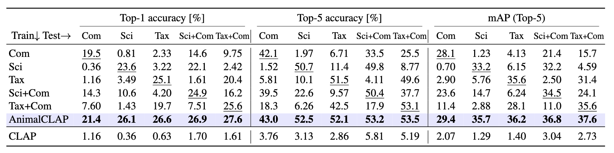
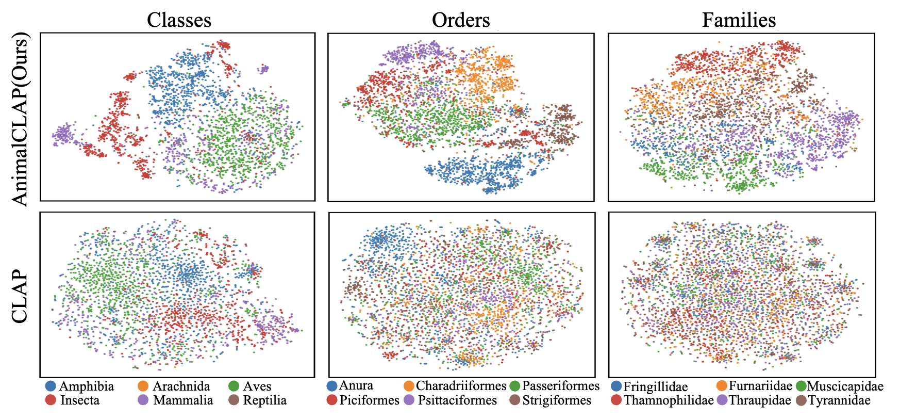
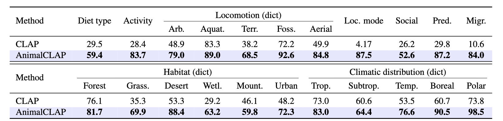

1The University of Osaka 2The University of Tokyo 3Institute of Science Tokyo
Animal vocalizations provide crucial insights for wildlife assessment, particularly in complex environments such as forests, aiding species identification and ecological monitoring. Recent advances in deep learning have enabled automatic species classification from their vocalizations. However, classifying species unseen during training remains challenging. To address this limitation, we introduce AnimalCLAP, a taxonomy-aware language-audio framework comprising a new dataset and model that incorporate hierarchical biological information. Specifically, our vocalization dataset consists of 4,225 hours of recordings covering 6,823 species, annotated with 22 ecological traits. The AnimalCLAP model is trained on this dataset to align audio and textual representations using taxonomic structures, improving the recognition of unseen species. We demonstrate that our proposed model effectively infers ecological and biological attributes of species directly from their vocalizations, achieving superior performance compared to CLAP.
Zero-shot accuracies on species not seen during training. Across all metrics, the AnimalCLAP model consistently achieves the highest performance.

t-SNE visualization of AnimalCLAP and pretrained CLAP. In the top row, we observe that the AnimalCLAP model exhibits clearer embedding clusters aligned with the taxonomic hierarchy (class, order, family) compared to CLAP. Single-type models (e.g., Sci and Tax) excel in their respective query types but demonstrate weaker generalization across other types, whereas our proposed model sustains robust performance uniformly across all test settings.

Overall, our method consistently outperforms the CLAP baseline across all tasks (F1 Scores), highlighting the feasibility of inferring diverse ecological traits directly from sound.

@INPROCEEDINGS{shinodaanimalclap,
author={Shinoda, Risa and Shiohara, Kaede and Inoue, Nakamasa and Santo, Hiroaki and Okura, Fumio},
booktitle={ICASSP 2026 - 2026 IEEE International Conference on Acoustics, Speech and Signal Processing (ICASSP)},
title={AnimalCLAP: Taxonomy-Aware Language-Audio Pretraining for Species Recognition and Trait Inference},
year={2026},
volume={},
number={},
pages={7767-7771},
keywords={Protocols;Communication systems;HTTP;Over-the-top media services;Semantic communication;Learning (artificial intelligence);Machine learning;Artificial intelligence;Generative Pre-trained transformer;Foundation models;Animal audio;species classification;contrastive learning;audio dataset;CLAP},
doi={10.1109/ICASSP55912.2026.11463001}}